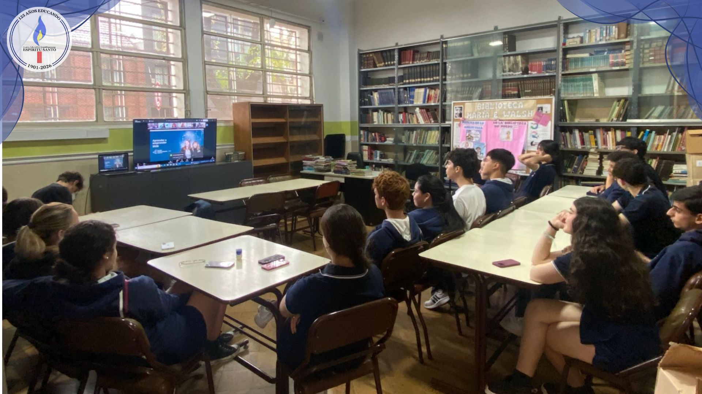
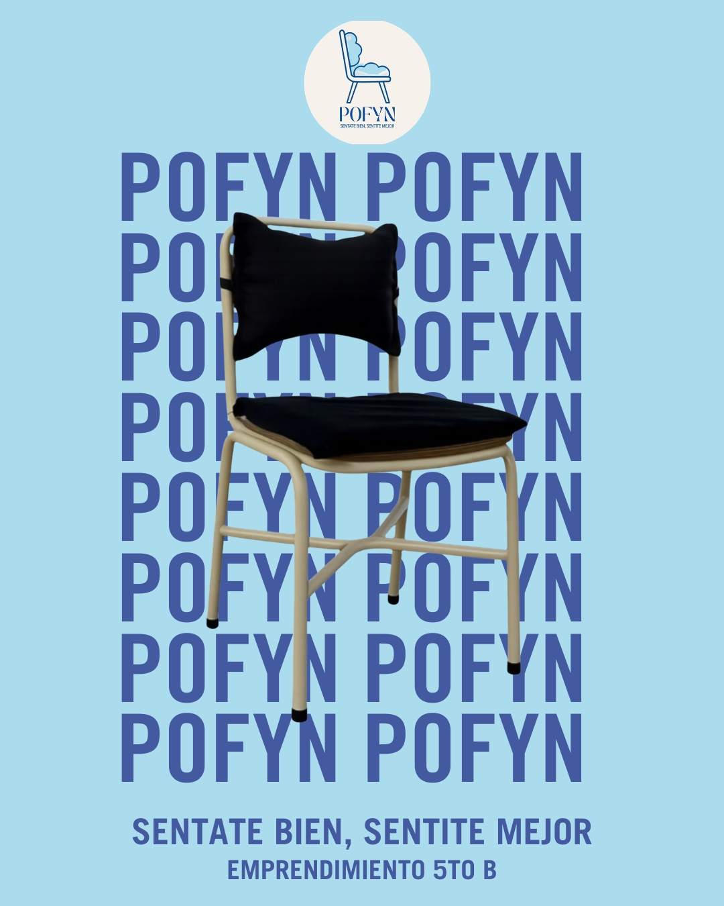

Hospital Italiano (Charla sobre donacion de sangre) 5º A
Por Yanina Rumacho y Mauricio Criollo

A inicios de Junio, Horacio, uno de los profesionales del equipo de salud del Hospital Italiano vino al Espíritu Santo para poder tener una charla con 5to A en la biblioteca del colegio para poder sentar las bases necesarias para que 5to A pudiera llevar a cabo una campaña de Donación de Sangre el 30 de Junio. Horacio explicó cómo sería el proceso de donación: desde que un donante llegue hasta que se vaya del establecimiento, que en este caso sería en las instalaciones del colegio gestionada por los alumnos de 5to A, a la par de comentar las condiciones que una persona debe tener para poder donar sangre o alguno de sus componentes.
Leer otras notas
Celebración de Pentecostés y 125 años de la Institución
Visita a la UADE
Publicidad
